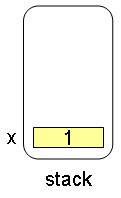
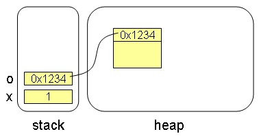
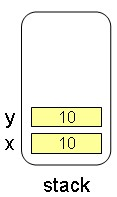
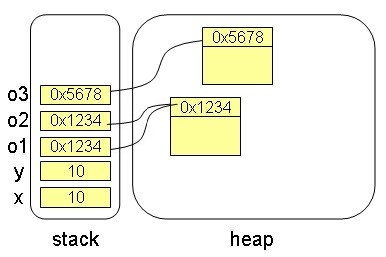
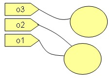

當你宣告一個基本型態變數並指定值時，例如：
int x = 1;
JVM會在記憶體的stack區開設一塊空間，儲存1這個值：

當你宣告一個參考名稱，並建立一個物件指定給該名稱時，例如：
Object o = new Object();
使用new時，JVM會在heap區取得一個空間來建立物件，你將物件指定給參考名稱，表示你將物件的記憶體位址設定給參考名稱，也就是JVM會在stack開設一塊空間，儲存這個記憶體位址：

如果你這麼撰寫程式：
int x = 10;
int y = x;
int y = x;
則是將x變數的值儲存值複製設定給y：

而使用==比較時，正是比較變數所儲存的值是否相同，所以x==y會是true。那如果你這麼撰寫程式：
Object o1 = new Object();
Object o2 = o1;
Object o2 = o1;
實際上你是將o1儲存的值複製設定給o2，也就是：

而使用==比較時，正是比較變數所儲存的值是否相同，所以o1==o2會是true。那如果你這麼撰寫程式：
Object o3 = new Object();

而使用==比較時，正是比較變數所儲存的值是否相同，所以o1==o3會是false，o2==o3也會是false。
以上是底層行為的示意，只不過Java中並不允許直接處理記憶體位址，為了解釋，稱這種行為叫作「參考」（Reference），如果你沒有學過C++，這沒什麼問題，但如果你學過C++，可能會跟C++中的參考發生混淆，因為Java中的參考與C++中的參考指的並不是相同的東西，只是剛好都叫作「參考」而已。
因為Java中並不允許直接處理記憶體位址，一般為了表示這樣的程式片段：
Object o1 = new Object();
Object o2 = o1;
Object o3 = new Object();
Object o2 = o1;
Object o3 = new Object();
會這麼畫：

再根據圖中o1、o2、o3是否綁在同一個物件上，跟你說明==於o1、o2、o3比較的結果。
我曾經聽過一個比較有趣的說法，雖然Java中建構式不用宣告傳回值，也不用宣告void，但實際上，建構式是有傳回值的，傳回值就是物件在記憶體中的位址，只不過你不能處理這個位址資訊罷了。這樣的說法，用來閱讀這篇文件中所在說明的行為，也不失為一種理解的方式。